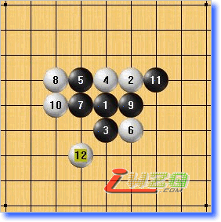

五子剑系列讲座之十【五子棋中级银月】
#1 五子剑系列讲座之十【五子棋中级银月】 作者：有志青年 发表时间：2007-12-26 17:20:45
注：五子剑五子棋系列讲座教程出自掌棋盟论坛，版权归原作者本人及掌棋盟论坛所有，未经许可，请勿私自转载。爱五子棋网站已获授权。
下棋这几年，飘飘零零的真正踏实在下棋的时间并不多，利用空闲的几天写下个人的一些经
验，希望可以对棋友有所帮助！
我认为下棋最重要的是态度和方法，你对五子棋的热爱程度以及学棋时所用的方法是提高
的关键！
阅读的顺序为：
五子棋初级→五子棋初级花月→五子棋初级蒲月→五子棋初级习题→
五子棋中级→五子棋中级云雨月→五子棋中级寒星→五子棋中级银月→五子棋中级习题→
五子棋ＶＣＦ习题集→五子棋高级
所有截图画面是ＬＩＢ、五子妙手３.０、ＱＱ游戏五子棋单机版能有如此多的人爱好
五子棋是最令人高兴的事，如此多的人为了同一种游戏来交流甚至痴迷！
感谢所有下五子棋的朋友，祝大家笑口常开、一生平安！
棋友：五子剑
#2 Re:五子剑系列讲座之十【五子棋中级银月】 作者：有志青年 发表时间：2007-12-26 17:21:55
现在再介绍一个黑优势开局，银月开局，在中级就介绍３个优势开局，每个开局都有值得学习的东西，当然最好是可以全部都熟练掌握。
现在我们看看银月局，如下图：
#3 Re:五子剑系列讲座之十【五子棋中级银月】 作者：有志青年 发表时间：2007-12-26 17:25:28
现在来看看白的防守，如下图：

4手下防黑二，比较弱，黑可在A,B,C三点成角简单胜！
这个4手也弱，黑简单做棋胜！
4手同样弱，5手活三7手下方成杀型！
6手下防，黑则上面做棋！
#4 Re:五子剑系列讲座之十【五子棋中级银月】 作者：有志青年 发表时间：2007-12-26 17:27:29
4手马步防守！6手与黑对攻，黑在下面形成杀型的同时牵制白上面的二！
10手使黑形成一个33禁手，12手在防守的同时对33点捉禁！此时黑应该冷静的考虑，决定后面的行棋策略！
13手选择在右边活三，15手防守后，虽然白暂时有先手，但是却没有什么进攻手段，而黑在右边却形成了 非常大的优势，黑战术成功！五子棋的等招正是体现了“后发制人”的要旨。

7手好棋！一子通三路！此时黑优势相当大，无论白如何防守，黑都可以找到杀路！
#5 Re:五子剑系列讲座之十【五子棋中级银月】 作者：有志青年 发表时间：2007-12-26 17:31:53
现在看看银月的最强４手点，如下图：
4手为白棋最强防守！银月主要学习的也是这个点！
5手为黑必胜点！
6手防守2条线路，7手在要点做棋!
8手增加左边力量，强防；11手黑占要点做棋！增加进攻力量！
10手反方向防守，黑则跳三占据要点！
#6 Re:五子剑系列讲座之十【五子棋中级银月】 作者：有志青年 发表时间：2007-12-26 17:34:36
白棋的强防思路是，占据黑一子通三路的做棋好点！
黑2手活三后11手形成左面一片优势！

12手防在这里，黑从21手开始，从右边到上面，再到左边，绕一圈后四三，这就需要我们眼界开阔！
15手也可以在这里做一手，轻松胜！
12手防这里黑则简单杀！
#7 Re:五子剑系列讲座之十【五子棋中级银月】 作者：有志青年 发表时间：2007-12-26 17:37:37
现在看看白６手的最强点，如下图：
6手直接防守黑二为最强防点！
黑棋一子通三路，蓄势待发。
8手防这里，黑在这里用的是一个常见的杀型！
请注意17与19手的次序！
8手活三，9手反三自然！
11手好棋！这种走法前面已经介绍了很多次了，后中先的走法！
#8 Re:五子剑系列讲座之十【五子棋中级银月】 作者：有志青年 发表时间：2007-12-26 17:39:57
白棋的最强防守，因为黑出现33的缘故，使得黑只好耐下性子慢慢拓展优势！

9手进攻切断白的活二，11手向上发展，寻求新的空间！
13手首先跳三好棋！15手，17手后顺利完成上方取胜的战术！
14手！这里就是13，15手的次序问题！
9手选择拓展做棋同样也可以取胜！优势局中有很多值得学习的东西，仔细学习会有很大的帮助和提高！
#9 Re:五子剑系列讲座之十【五子棋中级银月】 作者：古道东疯 发表时间：2007-12-26 19:00:24
坐沙发 学习 ！ 感谢指导！#10 Re:五子剑系列讲座之十【五子棋中级银月】 作者：送分 发表时间：2008-1-27 18:07:44
随便做个互动就可以了吧，银月没必要转载的。#11 Re:五子剑系列讲座之十【五子棋中级银月】 作者：东方鈺 发表时间：2008-5-12 15:19:55
感谢指导！
#12 Re:五子剑系列讲座之十【五子棋中级银月】 作者：萨塔 发表时间：2008-11-11 12:41:28
六楼第三幅图的22要是这样走怎么办。。。
=======上图对应的爱五子棋谱代码如下，以便你拆解：========
h8i9h7h9g9g8i7j6f7g7g6f5h5i4f10e11f8f9e7d6k9j8
======================================================
白棋有反。。。
=======上图对应的爱五子棋谱代码如下，以便你拆解：========
h8i9h7h9g9g8i7j6f7g7g6f5h5i4f10e11f8f9e7d6k9j8h12h10
======================================================
=======上图对应的爱五子棋谱代码如下，以便你拆解：========
h8i9h7h9g9g8i7j6f7g7g6f5h5i4f10e11f8f9e7d6k9j8e9e8h12g11i11h10
======================================================
#13 Re:五子剑系列讲座之十【五子棋中级银月】 作者：萨塔 发表时间：2008-11-11 13:21:38
8楼的第三个图。。。白跳三防守以后黑棋挡中间，白20要是走15上边怎么办。。。
=======上图对应的爱五子棋谱代码如下，以便你拆解：========
h8i9h7h9g9i7g8f9i8f8j9g6g11g10h11k8j11f11f10h12
======================================================
#14 Re:五子剑系列讲座之十【五子棋中级银月】 作者：何帅 发表时间：2009-11-7 22:43:40
受益很多啊~